ZA — South Africa
The main impact of a 200 basis-point (2.00 percentage-point) rise in United States interest rates on South Africa is a 0.04% drop in GDP by the 12th quarter — a limited spillover. South Africa ranks 16th by absolute GDP response and sits in the "minimal" band. The shock is a US monetary tightening, and the model traces how it propagates into South African activity, prices, and financial conditions relative to a baseline in which US rates had not moved. The peak GDP loss is −0.0437% of GDP in Q12, with the path starting at −0.0018% in Q1 and still at −0.0109% by Q20. That is a small number in level terms, but the shape matters: the drag builds for three years, crests, and then only partially unwinds.
Demand and trade. Household consumption falls to a peak of −0.0182% by Q12, tracking the GDP path closely and remaining at −0.0053% by Q20. Private investment is hit much harder, peaking at −0.1459% in Q9 before recovering to +0.0049% by Q20 as the cost-of-capital shock fades. Net exports — the trade balance, since this model does not split imports from exports — improve, peaking at +0.05% of GDP in Q9 and staying positive at +0.0195% by Q20. Government spending edges up to +0.0063% by Q11, a mild stabilising response, while government debt falls to −0.0181% by Q19, reflecting the weaker nominal tax base rather than any active fiscal contraction.
External / FX. The real exchange rate — currency strength — appreciates, peaking at +0.347% in Q9 and still +0.1325% by Q20. That is the key external offset: a stronger real exchange rate makes South African exports less competitive and imports cheaper, yet net exports still improve. The reason is that the domestic demand collapse (consumption and especially investment) cuts import demand by more than the currency appreciation cuts export demand, so the trade balance rises even as the currency strengthens. The two series line up in the expected direction: currency strength up, net exports up, because the income effect dominates the substitution effect here.
Labour. Employment falls to a peak of −0.0246% by Q15 and remains at −0.0169% by Q20. Unemployment rises to +0.0095 percentage points by Q14, easing only to +0.0054pp by Q20. Real wages rise to +0.0382% by Q11 before turning negative at −0.0102% by Q20. The labour market therefore deteriorates slowly and persistently: jobs and unemployment bear the brunt, while real wages initially improve as inflation falls faster than nominal wages, then reverse as the disinflation fades.
Prices. CPI inflation rises initially to +0.0161 percentage points in Q2, then crosses into negative territory at Q10 and ends at −0.0047pp by Q20. Domestic inflation follows the same pattern, peaking at +0.0112pp in Q2 and turning negative at Q10, ending at −0.0033pp. Firms' marginal cost falls to −0.0261% by Q12 and stays at −0.0065% by Q20. The initial inflation bump is a pass-through from the stronger currency and higher global rates; the subsequent disinflation reflects the demand slump and falling marginal costs.
Financial conditions. The local policy rate rises to +0.0311 percentage points by Q5, then falls below baseline from Q12 and ends at −0.0202pp by Q20. The 2-year government yield peaks at +0.0272pp in Q2 and turns negative at Q9, ending at −0.0121pp. The 5-year yield peaks at −0.0129pp in Q12, and the 10-year yield peaks at −0.0067pp in Q12. Bond prices fall to −0.2227% by Q8 before recovering to +0.0842% by Q20. Equity prices fall to −0.4193% by Q8, the largest financial response, and remain at −0.0536% by Q20. Tobin's Q — the value of installed capital — falls to −0.1021% by Q9 and returns to +0.0034% by Q20. House prices fall to −0.0479% by Q17 and stay at −0.0439% by Q20. Bank credit contracts to −0.0042% by Q17, and lending spreads widen by +0.0002pp by Q16. The financial channel is clearly the dominant transmission route: equity and bond prices take the biggest hits, and the policy rate and yields move in a coherent sequence.
Sectoral and capital. Manufacturing GDP falls to −0.106% by Q9, the deepest sectoral hit, and remains at −0.0385% by Q20. Services GDP falls to −0.0279% by Q12 and stays at −0.007% by Q20. The capital stock declines to −0.0074% by Q19, a slow-moving stock response to the investment slump. Manufacturing is more exposed than services because it is more capital-intensive and more sensitive to the cost-of-capital and currency channels.
Timing. The GDP hit is largest in Q12 at −0.0437%, and it has mostly faded by Q20, though it has not fully disappeared — the path is still negative at −0.0109%. The equity and bond price shocks peak earlier, around Q8, while the labour market and house prices lag, peaking in Q14–Q17. The sequence is financial conditions first, then activity, then labour and housing.
Close. These are model impulse responses to a 200bp US rate rise, not forecasts. They describe how South Africa's economy would deviate from a baseline in which US rates had stayed put, holding everything else constant. The headline is a limited spillover: a peak GDP loss of 0.04%, a peak equity loss of 0.42%, and a real exchange rate appreciation of 0.35%, with the drag largely but not entirely faded by Q20.
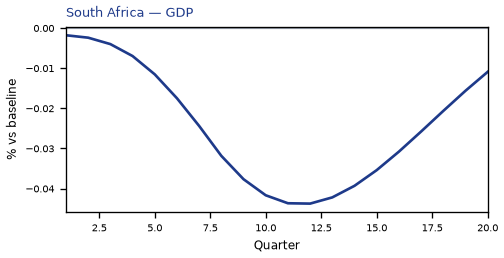
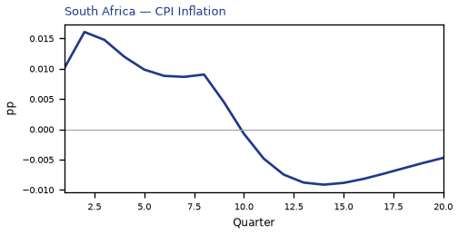
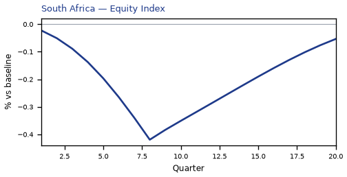
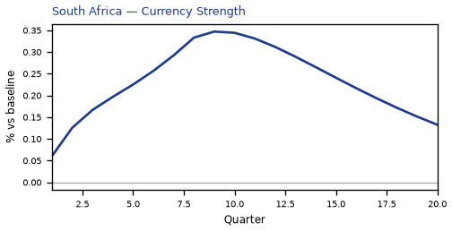
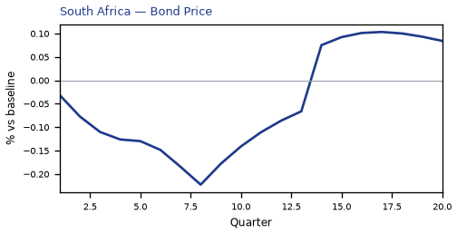
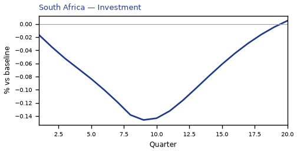
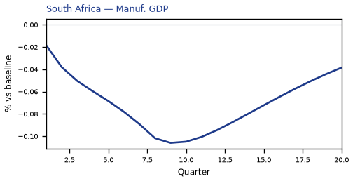
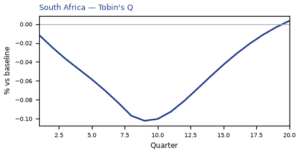
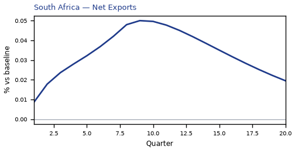
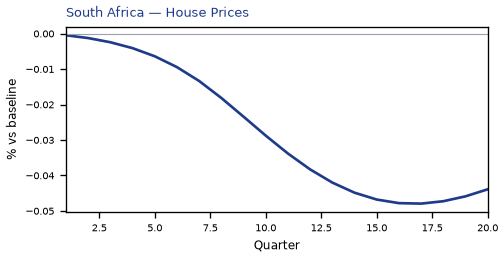
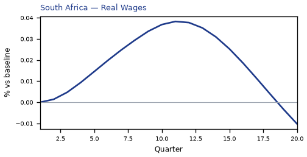

source=live · global_macro_v5 · contract v6 · Q1–Q20 JSON · not financial advice